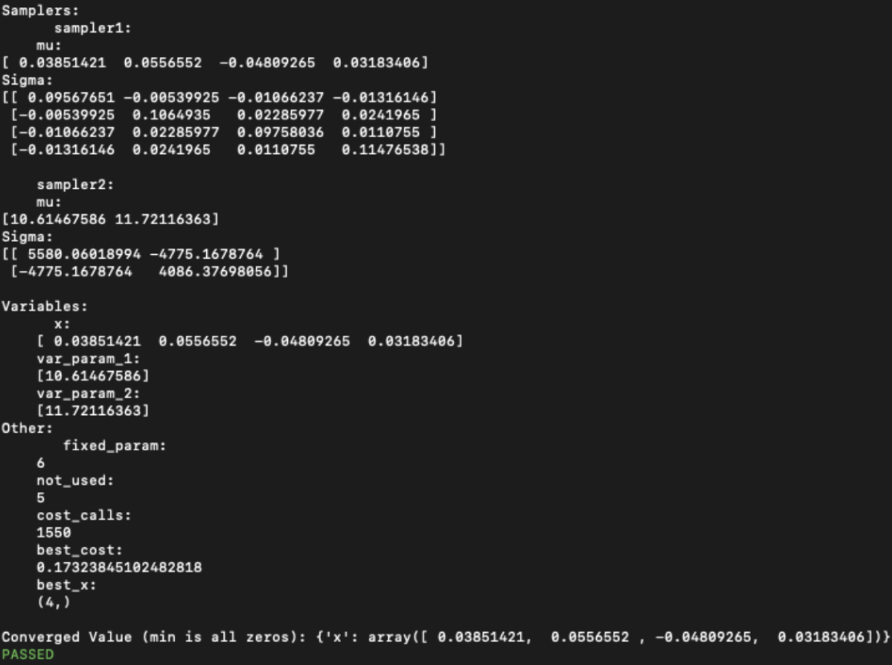
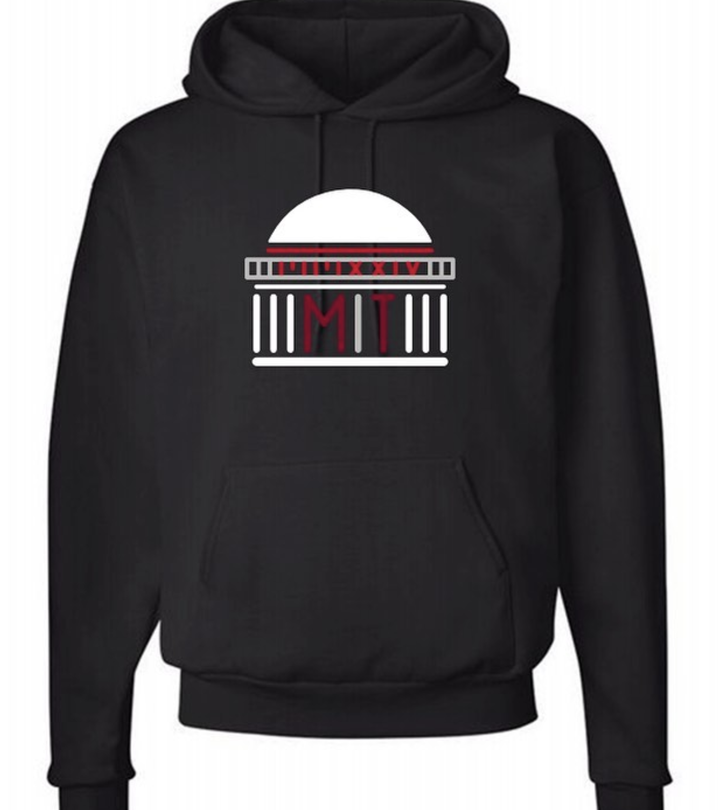
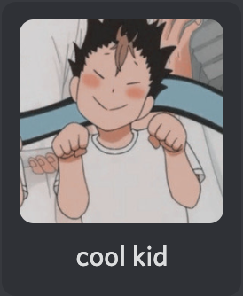

My second discord bot! I made this bot as a secret santa present for my friend who really liked
gacha games, games with in-game currency spent to receive a random prize item. An
advancement from my first bot, this one can take in input information, save it, and process it
after the initial command. So I could make more advanced games such as trivia and guess who.
I used Heroku to deploy this bot.
Summer
2021

Variational Optimization
Working with the MIT Media Lab, we created a python package using machine learning that could
produce a mixed Gaussian mixture that was optimized to have a certain KL divergence from the input
mixtures.
April
2021
Among Us
For a final project for my introduction to EECS class, we recreated the among us game on our Arduinos.
mar
2021

hoodie orders
I needed to process over 600 hoodie orders for class council. Using API's and python,
I coded a program to scrape the website for order information, sort it, then output the sorted data
into a google spreadsheet
dec
2020

Cool Kid Bot
My first discord bot! It responded to text commands, could randomly generate images, and had simple
games such as 8ball. I coded it in python using the discord.py library and used repl.it to deploy it.